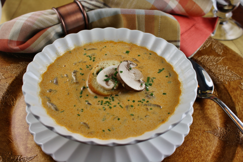

|  |
Ingredients
- 2 tablespoons unsalted butter
- 2 cups chopped onions
- 1 ½ pounds fresh mushrooms, thickly sliced
- 4 ½ teaspoons chopped fresh dill
- 1 tablespoon Hungarian sweet paprika
- 1 tablespoon soy sauce
- 2 cups low-sodium chicken broth
- 1 cup skim milk
- 3 tablespoons all-purpose flour
- ½ ripe tomato
- ½ Hungarian wax pepper
- 1 teaspoon salt
- ground black pepper to taste
- ½ cup light sour cream
|